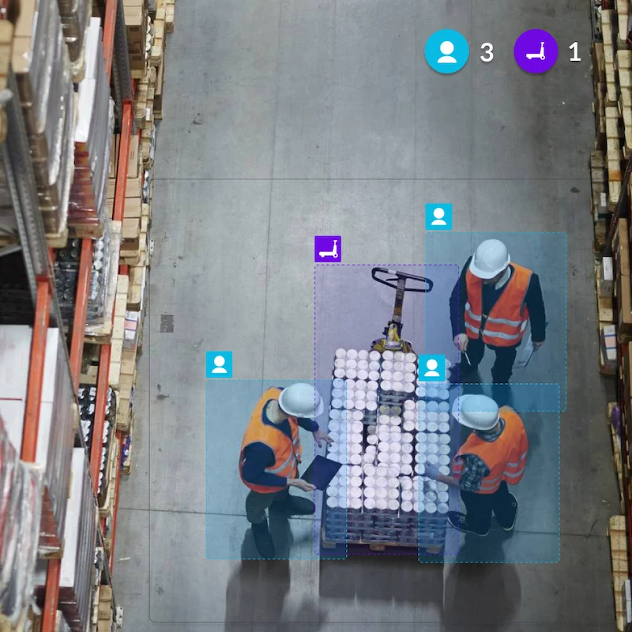

Vision agents for your cameras, with people in charge
We build agents that watch the camera feeds you already have, say in plain language what is happening and alert the right person.
Cameras are one source of events. For equipment sensor data see Physical AI, and for custom agents that act on events, see AI agent development.
Put your camera feeds to work
Video becomes more useful when it helps your team recognise a relevant event. We connect the scene to your monitoring requirements and bring defined observations into a dashboard and notification workflow.
The clips on this page are illustrative examples of the kind of scene a monitoring rule can cover. They are not applyd.ai customer footage.
Your site sets the monitoring priorities
Define the areas, activities and operating periods you want to observe. Build a shared view of what should be brought to your team's attention.
- 01
Restricted-area entry
Identify presence within designated equipment areas, process zones and other configured access boundaries.
- 02
Site-specific activity
Monitor defined movement or presence around selected equipment, locations and operating schedules.
Monitoring scenarios to explore
Examples of visual monitoring for safety and operations. Each scenario is assessed against your requirements, camera coverage and the detection approach needed.
Restricted pedestrian areas
Bring attention to people entering a zone where pedestrian access is restricted.
01 / Configured area boundaries
Activity at height
Review presence in designated elevated areas where additional attention is required.
02 / Selected areas and activities
Walkway obstructions
Explore monitoring for objects occupying important access routes or operational spaces.
03 / Defined routes and spaces
Visible liquid spills
Assess detection of visible floor conditions that may need investigation or cleanup.
04 / Scene coverage and visibility
Area occupancy
Assess monitoring for the number of people present in a defined space.
05 / Area-specific occupancy rules
These are application examples to evaluate with your team. The final monitoring scope is agreed and validated for the site.
Help the right person understand what happened
Bring observations into a dashboard, connect them to their location and time, and notify the designated contact through email, Slack or another agreed channel. Give your team the context to review the event and decide on the next step.
01 / Observe
Recognise the event.
Identify activity that matches the configured monitoring requirement.
02 / Understand
Bring the context.
Review the relevant camera scene, area and event timing.
03 / Inform
Reach the contact.
Send the observation to the person responsible for reviewing it.

Begin with the cameras you already use
We assess your camera feeds, scene coverage and connection requirements, then shape the monitoring around your operation. Define the rules, areas and notification contacts with your team.
- On-site
- Cloud
- Hybrid
Choose an on-site, cloud or hybrid deployment to fit your environment.
What we build for camera and sensor feeds
Most projects start with one or two of these on a handful of cameras. We agree what counts as an event before building.
- 01
Safety and PPE checks
Hi-vis, hard hats and gloves checked where they are required, with an alert and a still frame for the person who can act.
- 02
Zones and perimeters
Alerts for people or vehicles entering restricted areas, crossing a line or being on site outside agreed hours.
- 03
Task and SOP verification
Checks that a step was done in the right order, such as a lock-out applied or a pallet wrapped, with the clip kept as evidence.
- 04
Line and quality monitoring
Spots stoppages, jams and visible defects, and asks the operator for a reason instead of guessing.
- 05
Equipment state and idle time
Reads whether a machine is running, idle or waiting, from the camera and, where available, machine sensors.
- 06
Searchable video history
Ask for every forklift near-miss on line 3 this week and get the clips with a short written summary.
Where it is used, by industry
The cameras are the ones you have. What changes is what the agent is told to look for.
- 01
Manufacturing
Cameras watch for missing PPE near machines, guards left open and lines that stop. Operators are asked why a stoppage happened so the reason is recorded.
- 02
Automotive
Cameras watch assembly stations for steps done out of order and for people too close to moving vehicles or robots. Paint and finishing areas can be checked for visible surface faults.
- 03
Energy / oil & gas
Cameras watch for people in exclusion zones and for missing PPE at hazardous sites. Gauges and equipment status can be read and logged between rounds.
- 04
Construction
Cameras watch for hard hats and hi-vis, for people in unsafe areas and for plant moving near workers. Site entrances can log who and what arrives out of hours.
- 05
Warehousing & logistics
Cameras watch forklift and pedestrian routes, blocked exits and dock activity. Vehicle and pallet counts can be logged at the doors.
- 06
Retail stores & sites
Cameras count people at entrances and queues, and flag spills, blocked aisles and doors left open. Counts are kept as totals without identifying anyone.
Industry pages in detail
- ManufacturingPPE, line stops, quality and task checks
- Warehousing & logisticsForklift near-misses, docks and yard activity
- ConstructionSite safety, plant and people, progress
- Energy, oil & gasPermit zones, remote sites and PPE
- Food processingHygiene, PPE and sanitation checks
- Security & perimeterIntrusion, after-hours entry and loitering
How a vision agent is built
Camera feeds go in, plain-language events come out, and a person reviews anything that matters before it leads to action.
From camera to alert
Runs continuously on each feed
- 01Connect feeds
- 02Detect
- 03Explain
- 04Alert
- 05Review
- 06Store and search
Privacy controls
Set before the first camera goes live
- 01Where it runs
- 02Blur and mask
- 03Retention
- 04Assessment
- 01
Connect feeds
The agent reads your existing IP cameras or NVR over standard protocols. No new cameras are needed to start.
- In practice
- RTSP and ONVIF stream ingest
- You get
- Live frames from each camera
- 02
Detect
Models find people, vehicles, PPE and equipment state in each frame.
- In practice
- Object detection and pose estimation
- You get
- What is in the scene
- 03
Explain
A vision-language model turns detections into a short sentence and checks them against your rules.
- In practice
- Rules plus vision-language description
- You get
- An event in plain language
- 04
Alert
The event goes to the right person with a still frame or clip, by Teams, Slack, SMS, email or webhook.
- In practice
- Routing by site, zone and shift
- You get
- A short alert with evidence
- 05
Review
A person looks at the evidence and decides what to do. Marking it reviewed closes the event.
- In practice
- Human review before any action
- You get
- A reviewed event log
- 06
Store and search
Events and short clips are kept for the period you set and can be searched in plain language.
- In practice
- Indexed events with retention limits
- You get
- Searchable, summarised history
- 07
Where it runs
Processing runs on your site or in your private cloud, so raw video stays with you.
- In practice
- Edge servers or private cloud
- You get
- Video that stays in your estate
- 08
Blur and mask
Faces and people can be blurred in stored clips and dashboards, and areas can be masked out.
- In practice
- Configurable blurring and zone masks
- You get
- Less personal data kept
- 09
Retention
Clips are deleted after a set number of days. Only flagged events are kept.
- In practice
- Retention limits per camera
- You get
- Data deleted on schedule
- 10
Assessment
We help you complete a data protection impact assessment and plan signage and worker consultation.
- In practice
- UK GDPR and ICO guidance
- You get
- A documented assessment
Watch a camera feed become an event log
A scripted example of events from three cameras in one day: each alert, the person it goes to and the review step.
- 06:40
Line 3: forklift and pedestrian too close
A forklift and a person come within the 2 m limit. The event is logged as a near-miss with a short clip attached.
- Camera
- Line 3
- Logged as
- Near-miss
- 07:15
Line 3: stopped for 4 minutes
The line has not moved for four minutes, so the agent asks the operator for the reason instead of guessing.
- Asked
- Why did the line stop?
- Sent to
- Line 3 operator
- 07:19
Operator replies
The operator answers that it was a label roll change. The agent records the reason against the stop.
- Reason
- Planned changeover
- 23:48
Gate A: opened after hours
The gate opens outside the allowed hours. Security is notified with the clip, and nothing else happens automatically.
- Camera
- Gate A
- Sent to
- Security
- 23:52
Shift lead marks it reviewed
A person looks at each event and decides what to do. The agent never acts against anyone on its own.
- Status
- Reviewed
- 06Next day
Search the history
Ask for every near-miss on line 3 this week and get the clips and a short summary, kept for the period you set.
- Query
- Near-misses, Line 3, this week
- Result
- Matching clips with a summary
Scripted example. Not a live camera feed or a real site.
Video AI in practice
Short videos showing how vision AI is used on real sites.
These are third-party industry examples from the companies credited under each video. They are not applyd.ai deployments or customers.

Watch
AI-based safety compliance monitoring
Source:

Watch
AI cameras for workplace safety
Source:

Watch
Workplace safety with computer vision
Source:

Watch
AI-powered industrial monitoring
Source:
How we keep camera AI safe
Watching people at work needs more care than most AI. These rules are agreed before any camera is switched on.
- Private
Video stays with you
Agents run on site or in your private cloud, and raw video is not sent to us.
- Private
Blurring and retention you control
Face and person blurring and retention limits are set per camera.
- Person
Alerts, not automatic punishment
The agent raises events. A person reviews them before anything happens to anyone.
- Person
UK GDPR and consultation
We work within UK GDPR and ICO guidance, help with the DPIA and recommend signage and worker consultation.
Tools we commonly work with
We choose per site and budget. Naming a tool is not a partnership or an endorsement.
- Cameras
- RTSP and ONVIF IP cameras
- Existing CCTV and NVR
- Models
- Object detection
- Pose estimation
- Vision-language models
- Runs on
- NVIDIA Jetson
- Edge servers
- Private cloud
- Outputs
- Live dashboard
- Teams, Slack, SMS and email
- Webhooks
- MES, CMMS and ticketing
Common questions about this work
What does Video AI do?
It analyses camera feeds for events you define, and brings relevant activity into a dashboard and notification workflow for review.
Who is it for?
Safety teams, operations leaders and site owners who need a clearer view of activity across industrial environments.
Can monitoring rules reflect our site?
Yes. Areas, activities, schedules and notification requirements are defined around your site. Additional detection scenarios are assessed and validated with your team before they are relied on.
What happens when an event is identified?
An alert appears in the dashboard, and a notification can be routed to a designated contact by email, Slack or another agreed channel. A person reviews it and decides what to do.
How do we get started?
Book a demo and share the site area, the activity and the operational challenge you want to understand.
Do we need new cameras?
Usually not. If your cameras or NVR can stream over RTSP or ONVIF we can read them. We check angle, lighting and resolution first, because they decide what is detectable.
Where does our video go?
It stays with you. The agent runs on your site or in your private cloud, and raw video is not sent to applyd.ai.
Does it identify or track individual workers?
Not by default. Most rules need to know that a person is present, not who. Blurring and retention limits are configurable, and anything more is agreed with you and your workers first.
Does it take action by itself?
It alerts the right person and logs the event. A person reviews it and decides what to do. It is not used for automatic discipline.
Is this allowed under UK GDPR?
It can be, with a lawful basis, a data protection impact assessment, clear signage and consultation with workers. We help with the assessment, but legal advice on your own case should come from your adviser.
How accurate is it?
It depends on the cameras, the lighting and the rule. We test on your own footage before launch, show you where it misses and tune thresholds. No system is perfect, which is why a person reviews alerts.
Can it use machine data as well as video?
Yes, where you can share it. Machine signals can confirm what the camera suggests, such as a line being stopped, and the output can go to your MES, CMMS or ticketing tool.
Can we search past footage?
Yes. Events and short clips are indexed, so you can ask for every near-miss on line 3 this week. Retention is set by you.
What does video AI do with existing cameras?
It connects to the IP cameras or NVR a site already has and watches for events your team defines, such as entry into a restricted zone, a blocked walkway or a visible spill. The right person gets an alert with a still or clip, reviews it and decides what happens next. Nothing acts on its own.